Introduction: Why People Analytics Needs Dedicated Feature Engineering
Standard machine learning tutorials often assume independent and identically distributed (i.i.d.) tabular observations. Real-world human capital management (HCM) systems violate these assumptions at every scale. Associate records exist inside nested organizational hierarchies, experience non-linear psychological decay, suffer from unobserved managerial frictions, and trigger viral contagion effects across collaborative networks.
When standard data science workflows feed raw tenure, department tags, and salary bands into generic gradient-boosted trees, the models routinely fail in production. They overfit small cohorts, suffer target leakage from high-cardinality department codes, miss temporal tipping points, and reinforce historical pay disparities.
I engineered people-analytics-toolkit to bridge this divide. It provides an enterprise-ready, mathematically rigorous library containing 50 specialized feature engineering formulations structured across 11 operational pillars. This document serves as the comprehensive technical reference for the package ahead of its PyPI release.
Installation and Core Dependencies
The people-analytics-toolkit package is built for modern Python (3.11+) and integrates directly with the standard scientific Python ecosystem. You can install it using pip:
pip install people-analytics-toolkitThe toolkit leverages standard dependencies:
- pandas & numpy: Vectorized matrix math, windowing, and high-performance cohort group operations.
- scipy & statsmodels: Econometric estimation, SVD decomposition, and time-series kernel smoothing.
- scikit-learn: Base estimators, cross-validation folds, and manifold metrics.
- networkx: Graph traversal, centrality decomposition, and random walk generation.
- arch: Generalized autoregressive conditional heteroskedasticity (GARCH) volatility modeling.
- hmmlearn: Expectation-maximization fitting of hidden operational regimes.
- lifelines: Non-parametric Kaplan-Meier survival curves and Nelson-Aalen cumulative hazard estimators.
- pyod: Local Outlier Factor density estimation for career velocity tracking.
- shap: TreeSHAP interaction tensors and non-linear zero-crossing inflection detection.
Complete Architectural Taxonomy: 50 Features Across 11 Pillars
The 50 features in people-analytics-toolkit are categorized into 11 distinct problem pillars addressing specific organizational phenomena:
| Pillar | Operational Domain | Features Included |
|---|---|---|
| 1. High Cardinality & Hierarchies | Cohort size disparity, sparse departments, leakage | |
| 2. Preserving Memory & Lifecycles | Long-range temporal decay, non-stationary headcounts |
|
| 3. Chaos, Volatility & Regimes | Scheduling turbulence, variance clustering, contagion | |
| 4. Structural Anomalies & Sequences | Outlier profiles, career sequence divergence, drift | |
| 5. Attribution, Interactions & Accounting | Rate-mix shifts, synergistic risks, hypothesis audits | |
| 6. Career Mobility & Tipping Points | Graph transitions, stagnation spikes, flight risk surges | |
| 7. Compensation & Pay Equity | Band parity, salary compression, red/green circling | |
| 8. Relational Dynamics & ONA | Information bottlenecks, structural holes, manager load | |
| 9. Algorithmic Equity & Fairness | Pay gap decomposition, equal opportunity, Lipschitz | |
| 10. Prescriptive Causal Interventions | Confounded observational policies, uplift targeting |
|
| 11. Continuous Trajectories & Graph Learning | Holding durations, multi-relational skills, attention |
Pillar 1: High Cardinality & Hierarchical Cohorts
In HCM data, associates are grouped into hierarchical clusters: stores, teams, departments, job codes, and cost centers. Small cohorts have high variance; naive mean encoding creates fatal out-of-sample target leakage. Pillar 1 stabilizes small-sample cohorts through empirical Bayes shrinkage and leave-one-out adjustments.
Feature 1: Bayesian Target Encoding (Empirical Bayes Shrinkage)
Business Context: Small retail stores or specialized functional teams often exhibit extreme historical turnover rates (0% or 100%) purely due to small sample size. Using raw cohort averages leads to catastrophic overfitting. Bayesian target encoding shrinks small cohort averages toward the enterprise prior mean based on a credibility weight \(m\).
Mathematical Formulation:
$$\hat{S}_i = \lambda(n_i) \cdot \bar{y}_i + (1 - \lambda(n_i)) \cdot \bar{y}_{\text{global}}, \quad \lambda(n_i) = \frac{n_i}{n_i + m}$$from people_analytics_toolkit.cardinality import BayesianTargetEncoder
# Instantiate encoder with smoothing prior and cross-validation folds
bte = BayesianTargetEncoder(
m=15.0, # Prior smoothing weight / pseudocount (e.g., 5.0, 10.0, 15.0, 25.0, 50.0)
cv_folds=5, # K-fold splits for out-of-fold leakage prevention (e.g., 3, 5, 10, None for in-sample)
seed=42 # Random seed for fold shuffling
)
# Compute out-of-fold target encoding for enterprise training rosters
encoded_series = bte.fit_transform_oof(
df=roster_df, # pandas DataFrame containing cohort and target columns
group_col='store_dept', # Column name or composite hierarchy key (e.g., 'store_id', 'department_id', 'store_dept')
target_col='turnover' # Target binary indicator (0/1) or continuous outcome column
)
# In-sample transform for out-of-sample validation or test sets
test_encoded = bte.transform(
df=val_roster_df,
group_col='store_dept'
)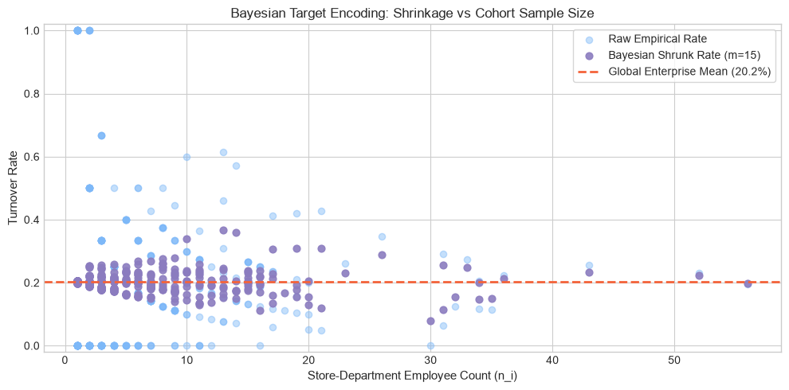
Feature 2: Grouped Leave-One-Out (LOO) Z-Scores
Business Context: To assess whether an employee is logging excessive overtime or underperforming relative to immediate peers, one must calculate a peer z-score. However, if the employee's own value is included in the cohort mean and standard deviation, the metric is biased toward zero in small teams. LOO Z-scores remove the focal individual from the peer cohort statistics.
Mathematical Formulation:
$$\mu_{-i} = \frac{\sum_{j \neq i} x_j}{n - 1}, \quad \sigma_{-i} = \sqrt{\frac{\sum_{j \neq i} (x_j - \mu_{-i})^2}{n - 2}}, \quad z_i = \frac{x_i - \mu_{-i}}{\sigma_{-i} + \epsilon}$$from people_analytics_toolkit.cardinality import GroupedLOOZScore, calculate_grouped_loo_zscore
# Object-oriented pipeline approach
loo_calculator = GroupedLOOZScore(
group_col='department_id', # Cohort grouping key (e.g., 'team_id', 'department_id', 'store_id')
target_col='overtime_hours', # Continuous telemetry metric (e.g., 'overtime_hours', 'sales_quota', 'absence_days')
ddof=1, # Delta degrees of freedom (0 for population variance, 1 for sample variance)
eps=1e-8 # Epsilon floor to prevent division-by-zero on zero-variance cohorts
)
loo_z_series = loo_calculator.transform(df=timeseries_df)
# Or functional execution:
loo_z_series = calculate_grouped_loo_zscore(
df=timeseries_df,
group_col='department_id',
target_col='overtime_hours',
ddof=1,
eps=1e-8
)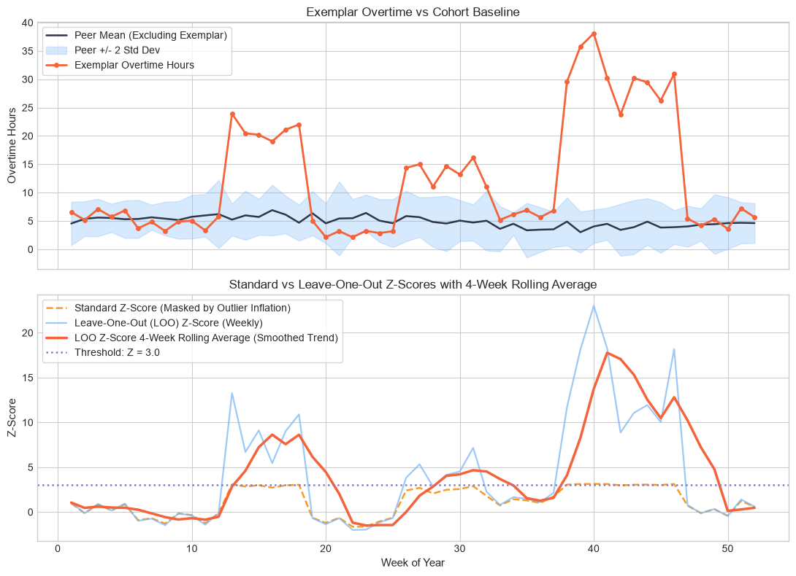
Feature 3: Leave-One-Out Expected Differential (LOO-ED)
Business Context: Evaluating supervisory quality or "manager alpha" requires separating the manager's true impact from the baseline capabilities of their assigned associates. LOO-ED computes the expected performance differential of a cohort when omitting each member, quantifying whether a leader reliably lifts or drags down performance.
Mathematical Formulation:
$$\Delta_{\text{LOO-ED}, i} = y_i - \mathbb{E}[y \mid \text{Cohort}_{-i}]$$from people_analytics_toolkit.attribution import LeaveOneOutExpectedDifferential
# Quantify manager value-add / cohort differential
loo_ed_model = LeaveOneOutExpectedDifferential(
group_col='manager_id', # Cohort or supervisor identifier (e.g., 'manager_id', 'store_id', 'pod_lead')
metric_col='retention_rate', # Observed performance / retention metric (e.g., 'retention_rate', 'productivity')
target_col='turnover_rate' # Benchmark or counterfactual baseline column (e.g., 'turnover_rate', 'baseline_rate')
)
ed_series = loo_ed_model.transform(
df=shift_manager_performance_df # DataFrame containing shift and cohort observations
)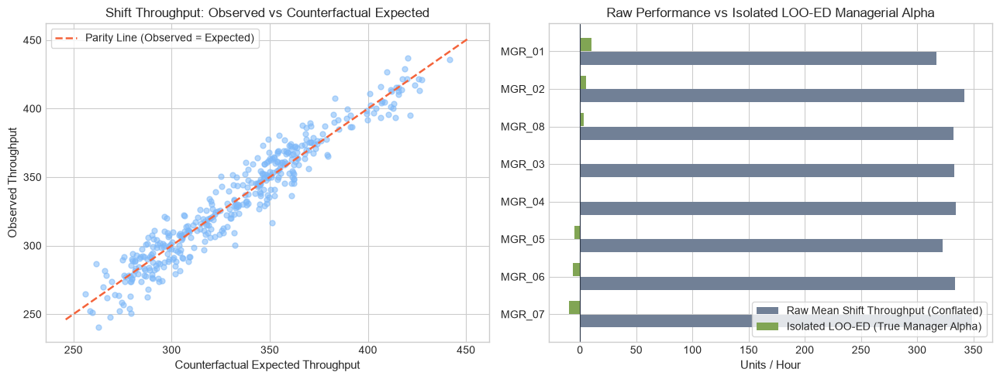
Pillar 2: Preserving Memory, Lifecycles & Time Decay
Workforce behavior is deeply temporal. Events from two weeks ago have vastly different psychological impact than events from twelve months ago. Standard integer differencing (\(d=1\)) wipes out all multi-year organizational memory, while raw metrics suffer from non-stationarity. Pillar 2 implements memory-preserving filters and hazard embeddings.
Feature 4: Fractional Differencing
Business Context: Macro workforce headcount series are typically non-stationary. Taking standard first differences (\(d=1\)) achieves stationarity but destroys all long-memory signals (e.g., seasonal hiring buildup and multi-year restructuring). Fractional differencing expands the lag operator with real order \(d \in (0, 1)\) using binomial series, retaining maximum memory while satisfying stationarity tests (ADF \(p < 0.05\)).
Mathematical Formulation:
$$(1 - L)^d = \sum_{k=0}^{\infty} (-1)^k \binom{d}{k} L^k = 1 - dL + \frac{d(d-1)}{2!} L^2 - \frac{d(d-1)(d-2)}{3!} L^3 + \dots$$from people_analytics_toolkit.memory import fractional_difference, scan_fractional_differencing
# Compute fractional differencing on workforce headcount or demand series
fd_series = fractional_difference(
series=headcount_timeseries, # pandas Series, numpy array, or list of longitudinal measurements
d=0.42, # Fractional differencing order (e.g., 0.25, 0.35, 0.42, 0.60)
threshold=1e-4 # Weight truncation threshold to bound computational memory (e.g., 1e-4, 1e-5)
)
# Automated scan across d values to find minimal d satisfying Augmented Dickey-Fuller stationarity
scan_results_df = scan_fractional_differencing(
series=headcount_timeseries,
d_values=None, # Optional array of d values (defaults to np.linspace(0.0, 1.0, 21))
threshold=1e-4
)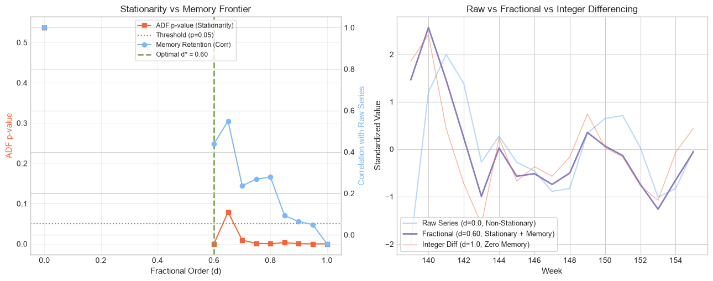
Feature 5: Weighted Weeks Since (Continuous Event-Decay Features)
Business Context: Employee recognition awards, spot bonuses, and performance citations boost engagement, but their retention effects decay over time. Furthermore, an Executive Excellence Award carries higher lasting value than a peer-to-peer Bronze citation. This feature models continuous exponential decay modulated by award tier multipliers.
Mathematical Formulation:
$$W_i(t) = \sum_{e \in E_i} w_e \cdot \exp\left(-\frac{\ln(2)}{\tau} (t - t_e)\right)$$from people_analytics_toolkit.memory import weighted_weeks_since
# Calculate continuous decaying recognition capital
decay_df = weighted_weeks_since(
events_df=rewards_df, # Event log DataFrame
current_week=52, # Current evaluation week / time step (e.g., 52, 104, 156)
half_life_weeks=8.0, # Half-life tau in weeks for exponential decay (e.g., 4.0, 8.0, 12.0)
employee_id_col='employee_id', # Associate identifier column
event_week_col='award_week', # Event occurrence week index column
tier_col='award_tier', # Categorical award level column
custom_tier_weights={ # Multiplier weights for award prestige
'Bronze': 1.0,
'Silver': 2.5,
'Gold': 5.0,
'Executive': 10.0
}
)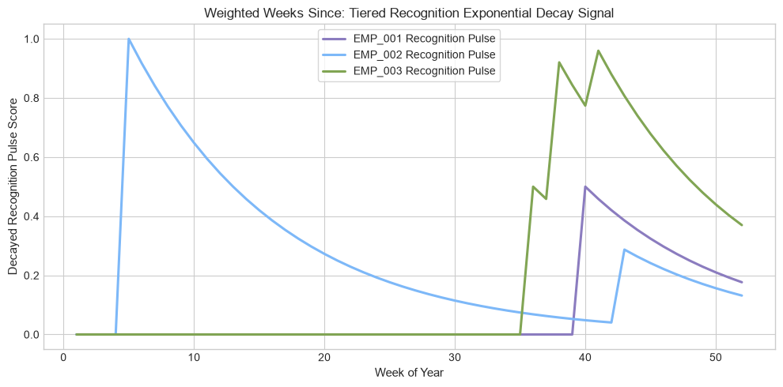
Feature 6: Exponentially Weighted Moving Average (EWMA) & Sum (EWMS)
Business Context: Simple rolling windows produce sudden cliff-effects when historical events drop out of the window. EWMA provides continuous exponential smoothing for continuous metrics (like store traffic or logged overtime). For discrete integer events (like safety near-misses or customer grievances), EWMS provides recursive count decay without distortion.
Mathematical Formulation:
$$y_t = \alpha x_t + (1 - \alpha) y_{t-1}, \quad \alpha = \frac{2}{\text{span} + 1}$$from people_analytics_toolkit.memory import calculate_ewma, calculate_ewms, scan_ewma_spans
# Continuous variable EWMA
traffic_ewma = calculate_ewma(
series=labor_hours_series, # Input pandas Series or 1D array
span=12, # Moving average decay span (e.g., 4, 12, 26, 52)
half_life=None, # Alternative half-life specification (e.g., 6.0, None)
alpha=None, # Direct smoothing factor override (0 < alpha <= 1, None)
min_periods=1, # Minimum required non-null observations
adjust=True, # Divide by decaying adjustment factor to mitigate early warmup bias
ignore_na=False # Whether to skip missing values in weight calculation
)
# Discrete event count EWMS (count data filtering)
incidents_ewms = calculate_ewms(
series=incident_counts_series, # Discrete event counts (e.g., safety grievances, callouts)
span=8, # Smoothing span
min_periods=1,
adjust=False # False preserves raw cumulative count scaling
)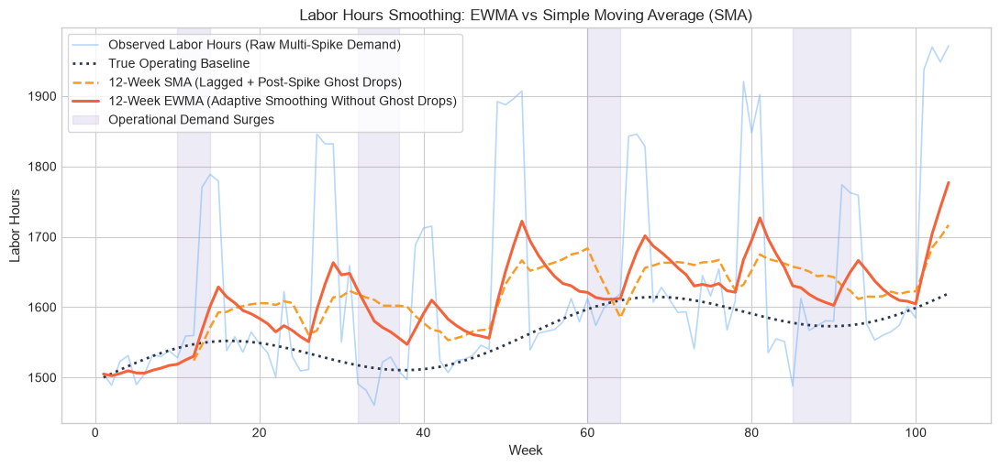
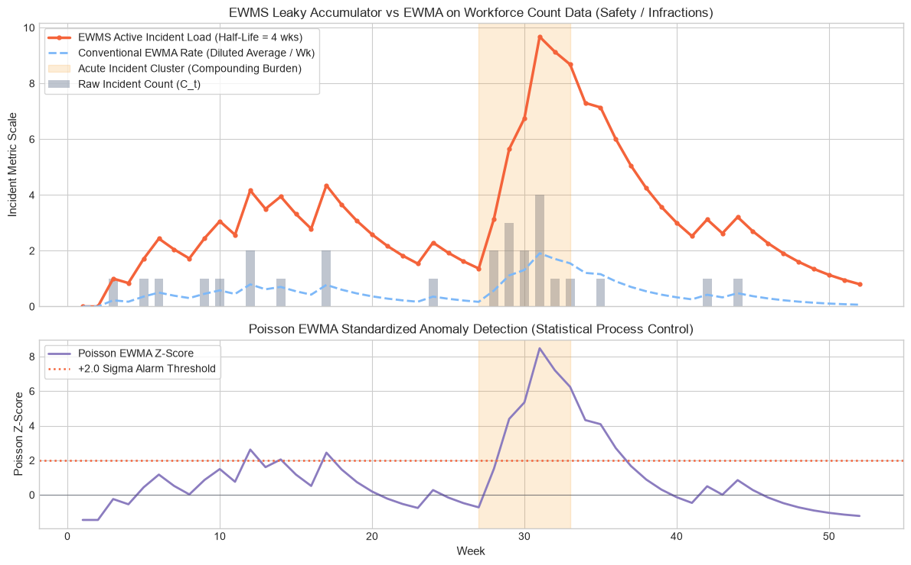
Feature 7: Double and Triple Exponential Smoothing (Holt-Winters)
Business Context: Enterprise workforce demand exhibits both long-term staffing growth (trend) and cyclical holiday or fiscal cycles (seasonality). Holt-Winters separates baseline level, slope trend, and seasonal components, enabling reliable multi-step headcount projections.
from people_analytics_toolkit.memory import double_exponential_smoothing, triple_exponential_smoothing
# Triple exponential smoothing with additive seasonality and trend damping
smoothed_s, forecast_df, hw_res = triple_exponential_smoothing(
series=workforce_demand_series, # 1D time-series Series or array
seasonal_periods=52, # Number of periods per seasonal cycle (e.g., 7 for daily, 52 for weekly)
alpha=None, # Level smoothing factor (None for automated MLE fit)
beta=None, # Trend smoothing factor (None for automated MLE fit)
gamma=None, # Seasonal smoothing factor (None for automated MLE fit)
trend='add', # Trend type: 'add', 'mul', or None
seasonal='add', # Seasonality type: 'add', 'mul', or None
damped_trend=True, # Damp linear extrapolation to prevent runaway forecasts
forecast_periods=12 # Number of out-of-sample periods to project forward
)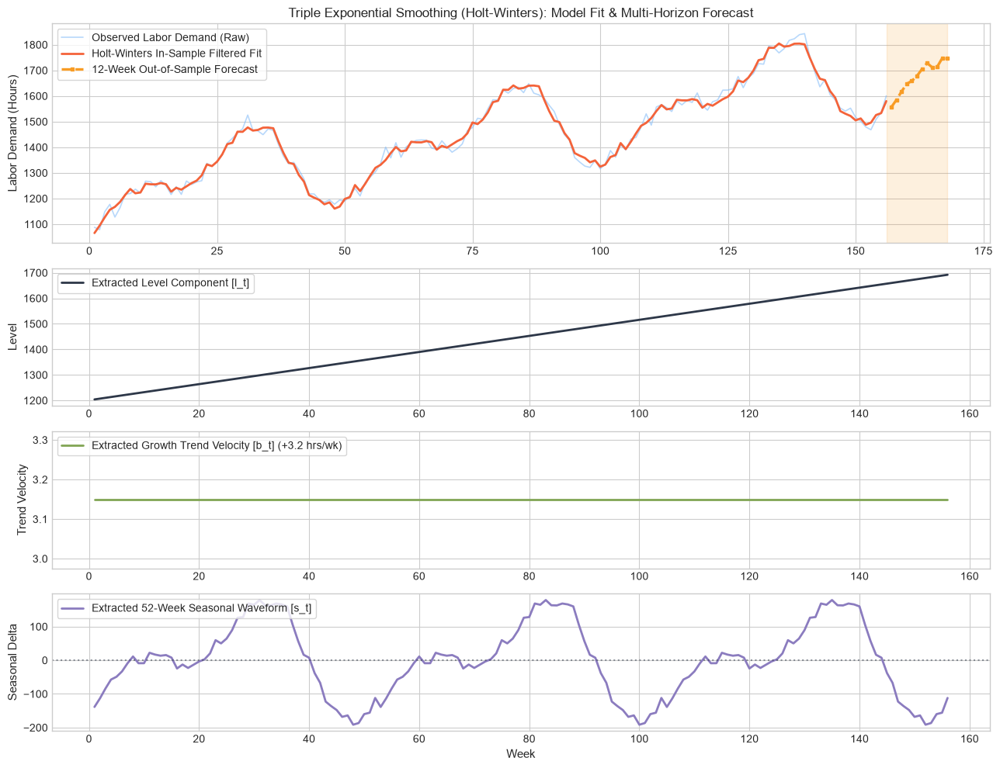
Feature 8: Kaplan-Meier & Nelson-Aalen Hazard Embeddings
Business Context: Associate attrition is a classic time-to-event survival process. Associates who leave at 6 months exhibit fundamentally different risk dynamics than those with 5 years of tenure. This feature estimates non-parametric survival curves \(S(t)\) and cumulative hazards \(H(t)\) to embed historical tenure hazard directly into predictive feature matrices.
Mathematical Formulation:
$$\hat{S}(t) = \prod_{t_i \leq t} \left(1 - \frac{d_i}{n_i}\right), \quad \hat{H}(t) = \sum_{t_i \leq t} \frac{d_i}{n_i}$$from people_analytics_toolkit.memory import fit_hazard_embeddings, HazardEmbeddingTransformer
# Fit non-parametric survival and hazard models on employee census
embedded_roster, hazard_models = fit_hazard_embeddings(
roster_df=roster_df, # Census DataFrame containing tenure and survival status
tenure_col='tenure_weeks', # Duration / tenure in position (e.g., 'tenure_weeks', 'tenure_months')
event_col='turnover_event' # Event indicator column (1 = voluntary termination, 0 = active / censored)
)
# Returns embedded_roster with: 'km_survival_prob', 'na_cum_hazard', 'hazard_quantile_bucket'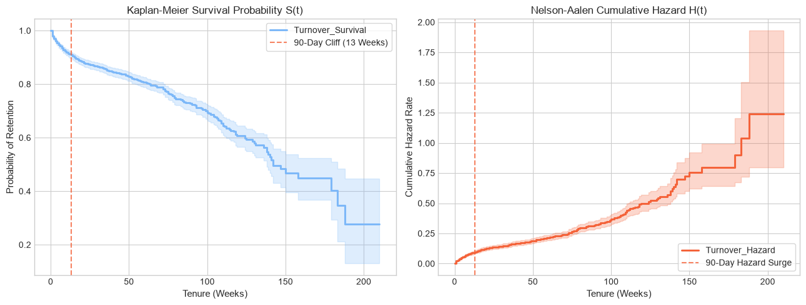
Feature 9: Configuration-Driven Rolling Metrics (Multi-Horizon Cohort Pipelines)
Business Context: Enterprise feature stores require consistent, reproducible feature pipelines that aggregate multiple operational signals across varying horizons (4, 12, 26, 52 weeks) without ad-hoc code duplication. This pipeline provides declarative multi-horizon rolling statistics.
from people_analytics_toolkit.memory import compute_rolling_metrics, RollingMetricConfig, RollingMetricsPipeline
# Declarative multi-horizon cohort rolling feature generation
rolling_df = compute_rolling_metrics(
df=store_telemetry_df, # Panel DataFrame indexed by cohort and date
date_col='fiscal_date', # Chronological timestamp column
metric_cols=['hours_worked', 'unplanned_absences'], # Numerical telemetry channels
windows=[4, 12, 26, 52], # Rolling horizons (e.g., 4-week, 12-week, 26-week, 52-week)
aggregations=['mean', 'std', 'min', 'max', 'skew'], # Statistical aggregation functions
group_col='department_id' # Cohort grouping key (None for global un-grouped series)
)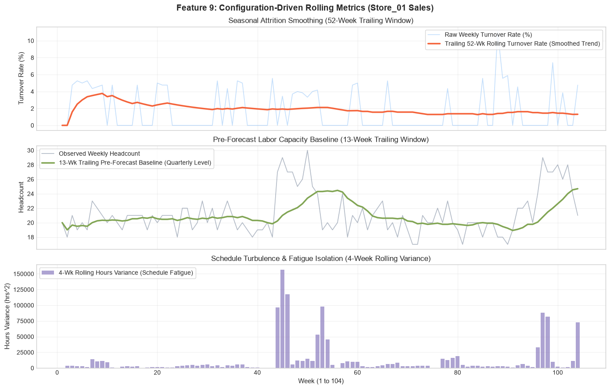
Feature 10: Singular Spectrum Analysis (SVD Smoothing & Lag-Free Baselines)
Business Context: Moving averages inevitably introduce phase lag, delaying the detection of operational shifts. Singular Spectrum Analysis (SSA) embeds the 1D time-series into a multidimensional trajectory Hankel matrix and applies SVD decomposition to reconstruct a clean, lag-free baseline trajectory.
from people_analytics_toolkit.memory import singular_spectrum_analysis, SingularSpectrumAnalysis
# Extract lag-free signal baseline via Hankel SVD
ssa_results = singular_spectrum_analysis(
series=daily_store_traffic, # 1D series of operational activity or headcount
window_length=14, # Trajectory embedding window L (e.g., 7, 14, 30, 52; typically L <= N/2)
top_k=3, # Leading singular value components to retain for reconstruction
variance_threshold=None # Optional cumulative variance cutoff (e.g., 0.90, 0.95, None)
)
# Returns dict: 'reconstructed', 'components', 'singular_values', 'explained_variance'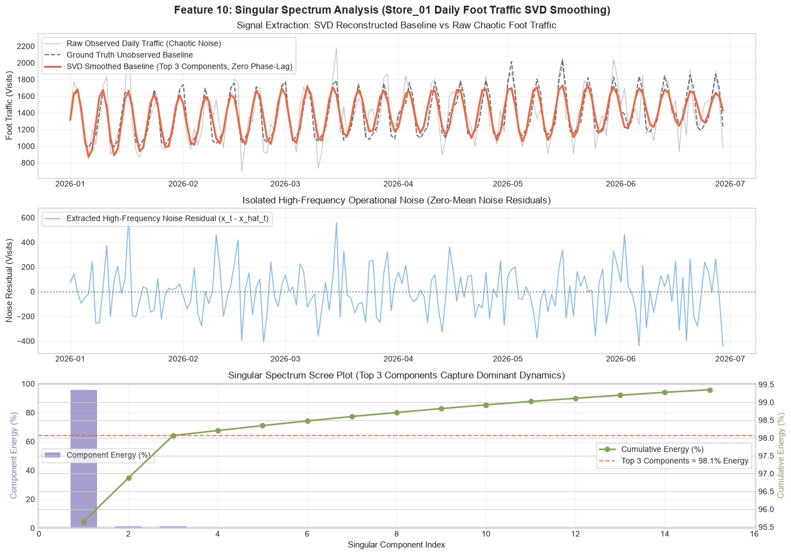
Feature 11: Hierarchical Lag & Autoregressive Features
Business Context: Time-series forecasting for store-level turnover and headcount requires historical autoregressive anchors. Computing hierarchical lags within each organizational unit prevents cross-entity leakage across store boundaries.
from people_analytics_toolkit.memory import compute_lag_features
# Generate group-aware autoregressive lag features
lagged_df = compute_lag_features(
df=workforce_panel_df, # Multi-entity panel DataFrame
group_col='store_id', # Entity grouping key (e.g., 'store_id', 'plant_id', 'department_id')
time_col='fiscal_week', # Monotonically increasing time integer or date
value_cols=['turnover_count', 'overtime_hours'], # Metric columns to shift
lags=[1, 2, 4, 12, 52] # Autoregressive lag steps (1-wk, 2-wk, 1-mo, 1-qtr, 1-yr)
)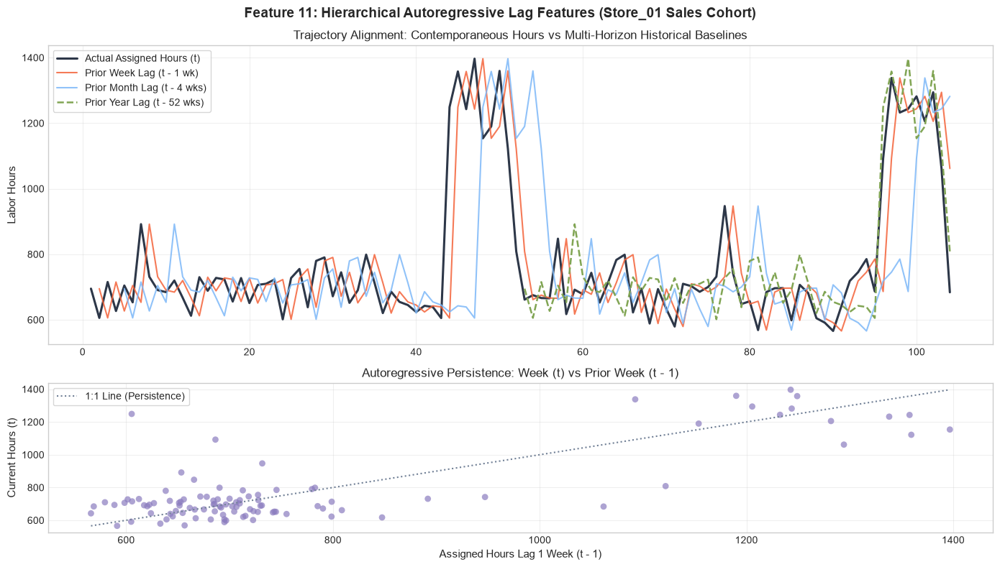
Feature 12: Multi-Horizon Differencing & Growth Rates (YoY, MoM, WoW & % Change)
Business Context: Executive leadership monitors growth velocities: Year-over-Year (YoY), Month-over-Month (MoM), and Week-over-Week (WoW) percent changes. This function computes absolute deltas and relative growth rates across user-specified multi-horizons.
from people_analytics_toolkit.memory import compute_differencing_features
# Multi-horizon growth velocities
diff_df = compute_differencing_features(
df=workforce_panel_df, # Panel DataFrame
group_col='store_id', # Cohort grouping key
time_col='fiscal_week', # Chronological index column
value_cols=['headcount', 'labor_cost'], # Target metrics to evaluate
periods=[1, 4, 12, 52], # Horizons: 1 (WoW), 4 (MoM), 12 (QoQ), 52 (YoY)
relative=True # True returns percentage growth rate: (x_t - x_{t-k}) / x_{t-k}
)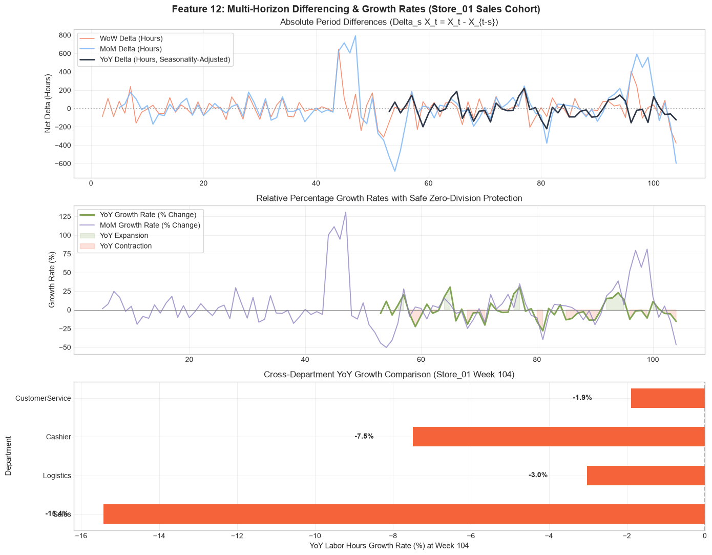
Pillar 3: Capturing Chaos, Volatility & Regimes
Workplace systems experience volatility clustering: stable periods are punctuated by sudden waves of callouts, schedule churn, and resignations. When scheduling volatility spikes, absenteeism becomes contagious. Pillar 3 captures non-linear volatility, information entropy, and latent operational regimes.
Feature 13: Rolling Shannon Entropy (The "Chaos Index")
Business Context: When an employee's shift assignments swing erratically between morning, evening, night, and weekend rotations, their work-life predictability collapses. Rolling Shannon entropy quantifies scheduling chaos from categorical shift allocations. High entropy directly correlates with accelerated burnout and flight risk.
Mathematical Formulation:
$$H(X) = -\sum_{k=1}^{K} p_k \log_2(p_k), \quad H_{\text{norm}}(X) = \frac{H(X)}{\log_2(K)} \in [0, 1]$$from people_analytics_toolkit.chaos import rolling_shannon_entropy, calculate_shannon_entropy
# Compute per-associate rolling scheduling entropy
entropy_series = rolling_shannon_entropy(
df=shift_schedules_df, # Shift assignment event DataFrame
val_col='shift_type', # Categorical role or shift assignment column (e.g., 'morning', 'night')
window=14, # Rolling evaluation window in shifts/days (e.g., 7, 14, 28)
group_col='employee_id', # Associate grouping key
base=2.0, # Logarithmic base (2.0 for shannons/bits, np.e for nats)
normalize=True # True normalizes by log(K) so entropy ranges strictly in [0.0, 1.0]
)
Feature 14: GARCH(1,1) Dynamic Volatility Index
Business Context: Standard standard deviations assume constant variance (homoskedasticity). Real-world operational staffing variance clusters: high-variance days follow high-variance days. A GARCH(1,1) process models conditional variance as a dynamic function of past innovation shocks and past variance.
Mathematical Formulation:
$$\sigma_t^2 = \omega + \alpha \epsilon_{t-1}^2 + \beta \sigma_{t-1}^2, \quad \alpha + \beta < 1$$from people_analytics_toolkit.chaos import fit_garch_volatility, rolling_garch_volatility, GARCHVolatilityModel
# Fit GARCH(1,1) model to unexpected scheduling variance residuals
cond_vol, garch_res = fit_garch_volatility(
series=scheduling_variance_residuals, # 1D time-series of zero-mean operational shock residuals
p=1, # GARCH autoregressive lag order for past conditional variance
q=1, # ARCH moving average lag order for past squared innovation shocks
mean='Constant' # Mean model formulation: 'Constant', 'Zero', or 'AR'
)
# Returns: cond_vol (conditional volatility series), garch_res (model summary with alpha, beta, omega)
Feature 15: Hawkes Process Intensity (The "Contagion" Feature)
Business Context: Unplanned absences are socially contagious. When two associates call out sick on a Monday, the remaining crew absorbs excessive strain, sharply increasing the probability that additional associates call out on Tuesday. A self-exciting Hawkes process models event arrivals where each historical event causes an immediate upward jump in intensity that decays exponentially over time.
Mathematical Formulation:
$$\lambda(t) = \mu + \sum_{t_i < t} \alpha \cdot \exp(-\beta(t - t_i))$$from people_analytics_toolkit.chaos import HawkesProcessContagion
# Initialize Hawkes contagion model
hawkes = HawkesProcessContagion(
baseline_mu=0.05, # Baseline background arrival rate per day
alpha=0.35, # Excitation jump magnitude per absence event
beta=0.75 # Exponential decay parameter governing speed of risk dissipation
)
# Fit maximum likelihood estimates from continuous event arrival timestamps
hawkes.fit(
event_times=absence_arrival_days # 1D numpy array of logged event timestamps in days
)
# Evaluate dynamic absence contagion risk across continuous evaluation grid
contagion_intensity = hawkes.predict_intensity(
query_times=evaluation_grid # Array of query timestamps
)
Feature 16: Hidden Markov Model (HMM) Latent States
Business Context: Organizations transition through unobserved operational regimes: Stable Operations, Acute Crisis (e.g., peak holiday rush with high overtime and callouts), and Post-Crisis Recovery. A Gaussian Hidden Markov Model infers these hidden states from multivariate operational emissions.
from people_analytics_toolkit.chaos import fit_workforce_hmm_regimes, WorkforceHMMRegimes
# Uncover latent operational regimes via multivariate Gaussian HMM
regime_df, trans_matrix, hmm_meta = fit_workforce_hmm_regimes(
df=workforce_telemetry_df, # Longitudinal multivariate operational telemetry
emission_cols=['callout_rate', 'overtime_ratio', 'schedule_churn'], # Emission feature channels
n_components=3, # Number of latent regimes (e.g., 2 for Stable/Crisis, 3 for Stable/Strained/Crisis)
seed=42 # Random seed for expectation-maximization initialization
)
# Returns: regime_df with 'latent_state' and posterior probabilities, trans_matrix (transition probabilities)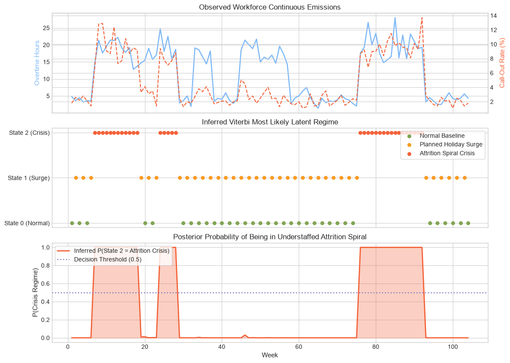
Feature 17: The Bradford Factor (Absenteeism Friction Score & Schedule Disruption)
Business Context: Operational scheduling is disrupted far more severely by frequent, short, unplanned absences than by a single prolonged medical leave. An associate absent for 1 day on 10 separate occasions causes widespread shift chaos, whereas an associate absent for 10 consecutive days causes a single manageable staffing adjustment. The Bradford Factor formalizes this asymmetry by squaring the number of spells.
Mathematical Formulation:
$$B = S^2 \times D$$from people_analytics_toolkit.chaos import calculate_bradford_score, classify_bradford_risk
# Calculate Bradford friction score
b_score = calculate_bradford_score(
instances=4, # Number of discrete, unplanned absence spells / episodes (S)
total_days=10 # Total cumulative days absent across all spells (D)
) # Formula: 4^2 * 10 = 160
# Classify operational risk tier
risk_tier = classify_bradford_risk(
score=b_score # Returns: 'Low Risk' (<50), 'Moderate Concern' (50-200), 'Severe Disruption' (>200)
)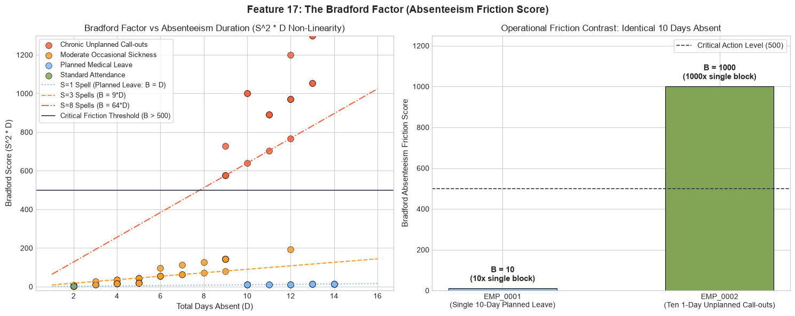
Pillar 4: Detecting Structural Anomalies, Density & Sequences
Workforce datasets contain subtle anomalies: compensation outliers masked by tenure, drift in departmental staffing structures, and abnormal career velocity profiles. Pillar 4 applies deep autoencoders, density estimation, trajectory alignment, and covariance-scaled distances.
Feature 18: Autoencoder Reconstruction Error (The "Weirdness" Index)
Business Context: Linear PCA misses non-linear interactions across multidimensional operational profiles (e.g., unusual ratios of managerial span, contract labor, and overtime). A deep bottleneck autoencoder compresses associate or store profiles into a low-dimensional manifold. High reconstruction loss signals structural anomalies.
Mathematical Formulation:
$$\mathcal{L}(x, \hat{x}) = \frac{1}{D} \sum_{d=1}^{D} (x_d - \hat{x}_d)^2$$from people_analytics_toolkit.anomalies import AutoencoderWeirdnessDetector
# Train deep bottleneck autoencoder on multidimensional store profiles
detector = AutoencoderWeirdnessDetector(
hidden_dims=[32, 16, 8], # Encoder layer sizes tapering to latent bottleneck (e.g., [64, 32, 16])
learning_rate=0.005, # Adam optimizer learning rate (e.g., 0.01, 0.005, 0.001)
epochs=120, # Optimization epochs (e.g., 80, 120, 200)
batch_size=32 # Mini-batch gradient descent size (e.g., 16, 32, 64)
)
weirdness_scores = detector.fit_transform(
X=store_feature_matrix # Standardized continuous feature matrix of organizational profiles
)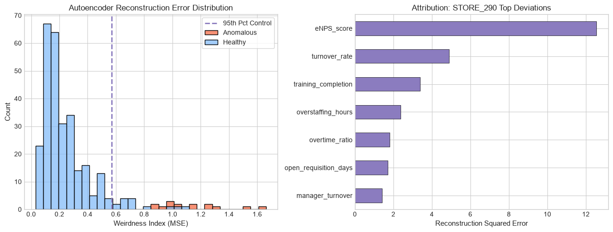
Feature 19: Local Outlier Factor (LOF via PyOD)
Business Context: Global outlier models fail when data clusters into regions of varying density (e.g., engineering salaries vs retail store wages). An executive earning $250k is normal; an entry-level clerk earning $140k in a low-cost region is a local anomaly. LOF evaluates an associate's local reachability density against their \(k\)-nearest neighbors.
from people_analytics_toolkit.anomalies import fit_pyod_local_outlier_factor, PyODLocalOutlierFactor
# Fit density-based local outlier detection on compensation velocity
lof_scores, is_outlier, lof_meta = fit_pyod_local_outlier_factor(
df=comp_velocity_df, # Compensation and career progression DataFrame
feature_cols=['salary_growth', 'tenure_years', 'performance_delta'], # Feature coordinates
n_neighbors=20, # Neighborhood size k for reachability density (e.g., 15, 20, 30)
contamination=0.04 # Expected prior proportion of true outliers (e.g., 0.01 to 0.05)
)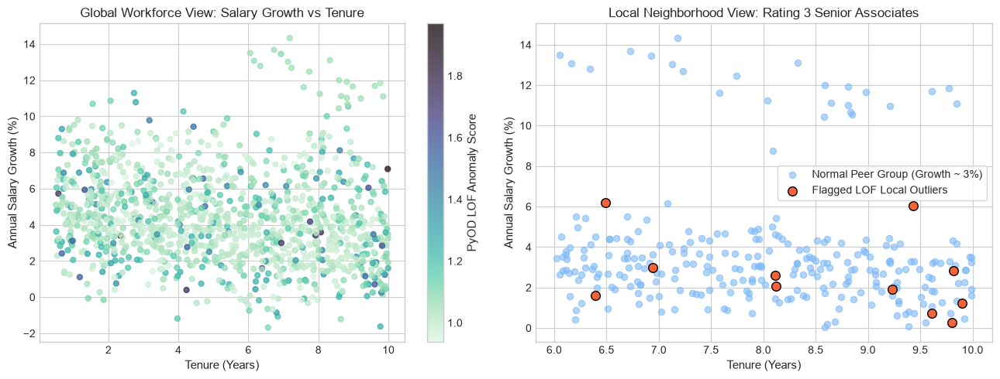
Feature 20: Kullback-Leibler (KL) Divergence (The "Drift" Index)
Business Context: Retail stores and corporate divisions are budgeted for specific job role distributions (e.g., 60% associates, 25% specialists, 15% supervisors). When a business unit silently drifts into a top-heavy structure, payroll escalates. KL divergence quantifies the information-theoretic distance from the target benchmark.
Mathematical Formulation:
$$D_{\text{KL}}(P \parallel Q) = \sum_{k=1}^{K} P(k) \ln\left(\frac{P(k)}{Q(k) + \epsilon}\right)$$from people_analytics_toolkit.anomalies import calculate_kl_divergence, calculate_jensen_shannon_divergence
# Calculate organizational staffing mix divergence from corporate benchmark
kl_drift = calculate_kl_divergence(
p=observed_store_distribution, # Empirical discrete probability distribution array (sums to 1.0)
q=corporate_benchmark_profile, # Target corporate distribution array (sums to 1.0)
epsilon=1e-12 # Numerical floor to prevent log(0) on empty job categories
)
# Symmetric Jensen-Shannon divergence bounded in [0, 1]
js_drift = calculate_jensen_shannon_divergence(
p=observed_store_distribution,
q=corporate_benchmark_profile
)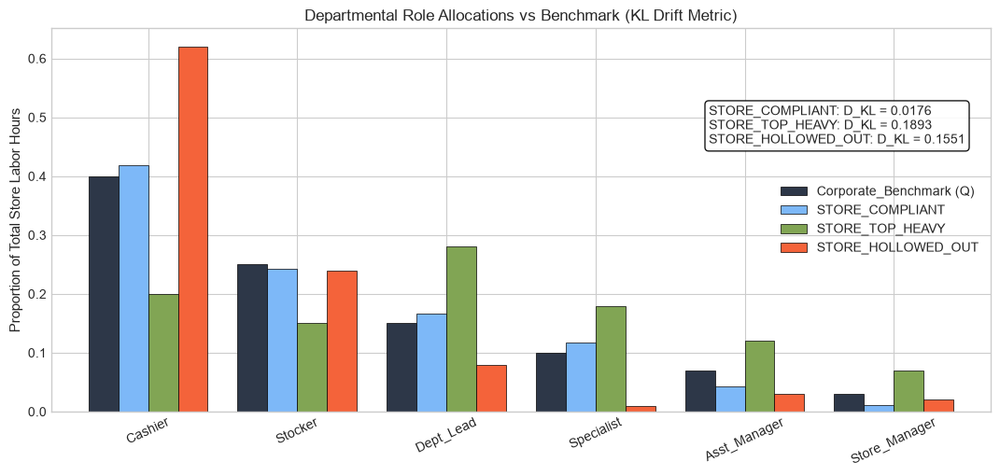
Feature 21: Dynamic Time Warping (DTW) Distance
Business Context: Comparing seasonal staffing patterns across retail locations requires temporal flexibility. Store A might experience its holiday hiring rush in week 44, while Store B experiences it in week 46 due to regional weather. Euclidean distance misclassifies them as divergent; DTW non-linearly aligns the time axes.
from people_analytics_toolkit.anomalies import compute_dtw_distance
# Non-linearly align seasonal curves
dtw_dist = compute_dtw_distance(
s1=store_seasonal_curve, # 1D series or array of local weekly staffing
s2=corporate_benchmark_curve, # 1D series of benchmark seasonal trajectory
window=8, # Sakoe-Chiba warping window constraint (None for unconstrained warping)
distance_metric='euclidean' # Pointwise distance metric: 'euclidean', 'manhattan', 'sqeuclidean'
)
Feature 22: Longest Common Subsequence (LCSS) & Edit Distance on Real Sequences (EDR)
Business Context: Career paths consist of ordered sequences of roles, certifications, and project assignments. An associate moving from [Sales Rep → Team Lead → Manager] follows a standard trajectory. LCSS and EDR measure similarity between real-valued career sequences under noise and gaps.
from people_analytics_toolkit.anomalies import compute_lcss_distance, compute_edr_distance
# Compute sequence distance on career trajectory codes
lcss_distance = compute_lcss_distance(
s1=associate_career_sequence, # 1D array of career stage levels or weekly shift lengths
s2=standard_career_template, # Reference benchmark progression
epsilon=1.0 # Matching tolerance threshold for continuous grade equivalence
)
# Edit distance with sub-cost penalty
edr_distance = compute_edr_distance(
s1=associate_career_sequence,
s2=standard_career_template,
epsilon=1.0
)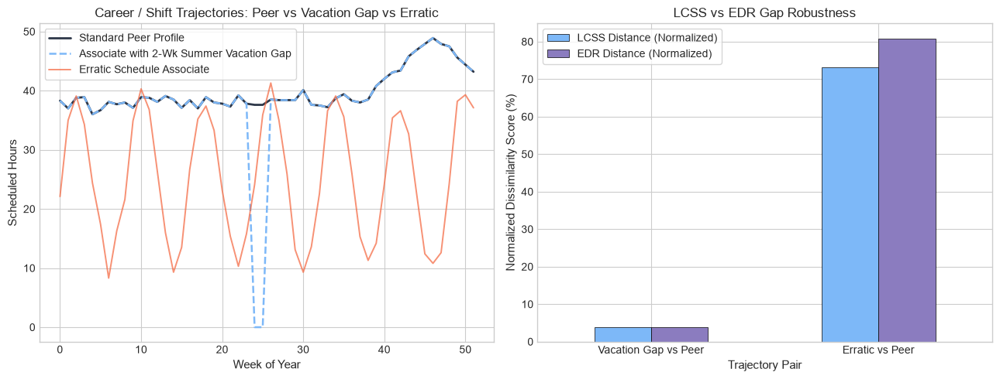
Feature 50: Multivariate Mahalanobis Distance (Covariance-Scaled Anomaly Detection)
Business Context: Euclidean distance assumes uncorrelated, spherical features. In HCM, overtime, tenure, and compensation are highly correlated. An associate with high compensation and high tenure is normal; an associate with high compensation and low tenure is an extreme anomaly. Mahalanobis distance scales the distance by the inverse covariance matrix.
Mathematical Formulation:
$$D_M(x) = \sqrt{(x - \mu)^T \Sigma^{-1} (x - \mu)}$$from people_analytics_toolkit.anomalies import calculate_mahalanobis_distance
# Compute covariance-scaled anomaly distance
mahalanobis_scores = calculate_mahalanobis_distance(
df=workforce_kpi_df, # DataFrame of multidimensional workforce metrics
feature_cols=['overtime_hours', 'attrition_rate', 'span_of_control', 'compa_ratio'], # Feature vector
robust=True # True fits Minimum Covariance Determinant (MCD) to prevent masking
)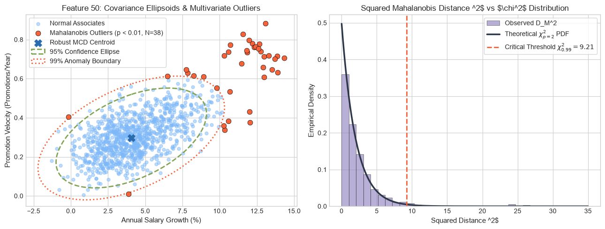
Pillar 5: Attribution, Interactions & Accounting
Executive HR leaders routinely confront aggregate macro movements: "Enterprise turnover rose from 14% to 18%." Did turnover rise because individual departments became worse (rate effect), or because the company expanded headcount in high-turnover retail divisions (mix effect)? Pillar 5 delivers exact rate-mix decomposition, non-linear SHAP interaction tensors, and robust correlation reports.
Feature 23: Log-Mean Decomposition (LMDI-I)
Business Context: Standard additive decompositions produce an unexplained residual interaction term. LMDI-I (Logarithmic Mean Divisia Index) utilizes logarithmic weights to achieve perfect zero-residual decomposition, isolating the exact percentage-point contribution of departmental turnover rates versus structural headcount shifts.
Mathematical Formulation:
$$L(a, b) = \frac{a - b}{\ln(a) - \ln(b)}, \quad \Delta R = \Delta R_{\text{rate}} + \Delta R_{\text{mix}} \quad (\text{Residual} \equiv 0)$$from people_analytics_toolkit.attribution import lmdi_rate_mix_decomposition, logarithmic_mean
# Decompose aggregate turnover shift into rate vs mix effects
breakdown_df, total_effects = lmdi_rate_mix_decomposition(
df=department_turnover_panel, # DataFrame containing baseline and evaluation period statistics
dept_col='department_name', # Organizational division column
h0_col='headcount_y0', # Baseline headcount
r0_col='turnover_rate_y0', # Baseline departmental turnover rate
h1_col='headcount_y1', # Evaluation headcount
r1_col='turnover_rate_y1' # Evaluation departmental turnover rate
)
# Returns: breakdown_df (per-dept rate and mix deltas), total_effects ('delta_rate', 'delta_mix', 'delta_total')
Feature 24: SHAP Interaction Values (2D Non-Linear Feature Interactions)
Business Context: Individual feature importances miss toxic synergies. For example, high overtime alone might increase turnover risk by +10%; a poor manager alone might increase risk by +15%. Combined, they might increase risk by +60%. SHAP interaction values decompose tree model predictions into main effects and pure pairwise non-linear synergies based on game-theoretic Shapley values.
from people_analytics_toolkit.attribution import compute_shap_interaction_matrix
# Compute exact TreeSHAP pairwise interaction matrix
interaction_matrix = compute_shap_interaction_matrix(
model=trained_tree_classifier, # Trained scikit-learn, XGBoost, or LightGBM model
X=features_df, # Feature matrix of employee covariates
feature_names=None, # Optional explicit list of feature names
max_samples=500 # Subsample limit for high-speed TreeSHAP evaluation
)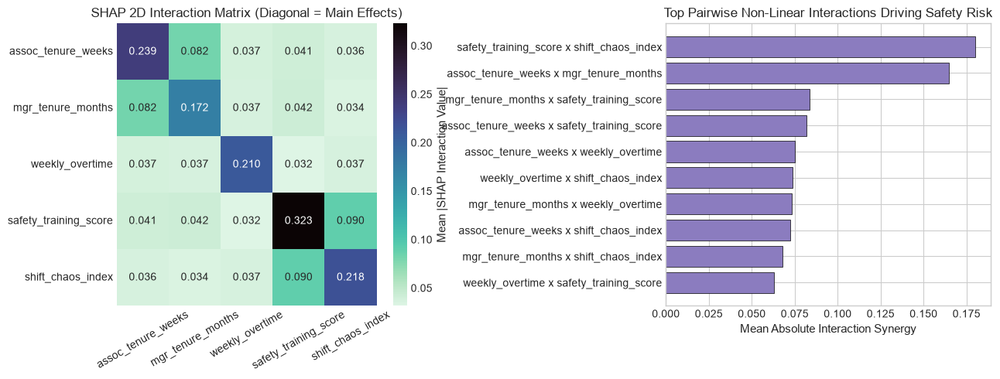
Feature 25: Correlation Heatmap Table (Pearson, Spearman, Kendall with CIs & p-values)
Business Context: Presenting raw correlation numbers to leadership without statistical significance tests invites faulty policy decisions. This module computes comprehensive correlation reports including Pearson, Spearman rank, and Kendall tau statistics, complete with Fisher \(z\)-transformed 95% confidence intervals and exact \(p\)-values.
from people_analytics_toolkit.attribution import correlation_heatmap_df
# Generate auditable correlation matrix with p-values and confidence bounds
corr_report_df = correlation_heatmap_df(
df=workforce_analytics_df, # Analysis DataFrame
cols=['tenure', 'engagement', 'flight_risk', 'salary_growth'], # Columns to audit
method='pearson', # Correlation metric: 'pearson', 'spearman', 'kendall'
alpha=0.05 # Significance level for Fisher-z confidence intervals
)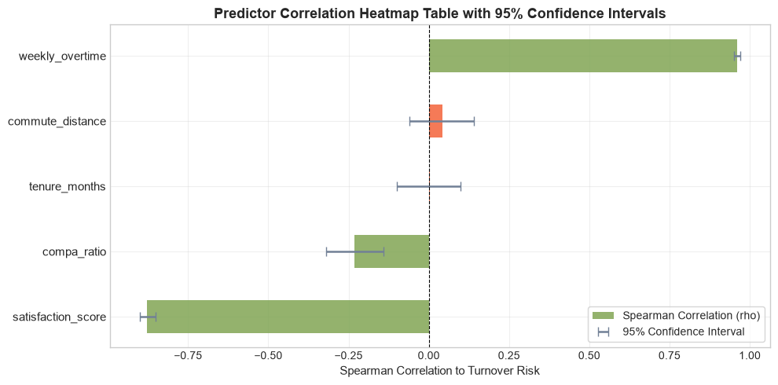
Pillar 6: Career Mobility, Succession & Behavioral Tipping Points
Career progression is not a continuous linear line; it operates through discrete graph transitions punctuated by stagnation cliffs. Associates stuck in grade beyond benchmark windows experience accelerated flight risk. Pillar 6 captures career mobility embeddings, zero-crossing SHAP inflection thresholds, and stagnation indices.
Feature 26: Movement Embeddings (Career Trajectory & Graph Embeddings)
Business Context: Standard talent analytics treats job titles as independent strings. However, "Senior Financial Analyst" shares latent competencies with "Operations Research Associate." By sampling career paths as transition walks through an organizational graph, Word2Vec/Skip-gram embeddings learn dense vector representations where cosine similarity directly mirrors internal mobility feasibility.
from people_analytics_toolkit.mobility import CareerMovementEmbeddings, get_role_similarity_matrix
# Learn latent role vector representations from historical internal mobility logs
embedder = CareerMovementEmbeddings(
vector_dim=16, # Latent embedding dimensionality (e.g., 8, 16, 32)
window=3, # Context transition window
min_count=1, # Minimum role transition observations required
walk_length=10, # Length of random walks across organizational graph
num_walks=20 # Walks sampled per source job title
)
embedder.fit(
transitions_df=career_moves_df, # DataFrame with 'from_role' and 'to_role' columns
source_col='from_role',
target_col='to_role'
)
# Extract full cosine similarity matrix across enterprise job catalog
role_sim_df = get_role_similarity_matrix(embedder)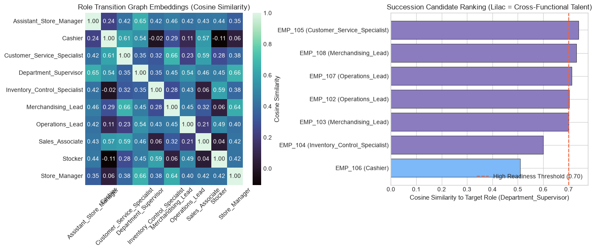
Feature 27: SHAP Inflection Thresholds for Term Rates (Zero-Crossing Behavioral Tipping Points)
Business Context: Feature impact is rarely linear. Overtime might have zero impact on retention up to 5 hours/week, moderate impact from 5 to 12 hours, and exponential turnover risk beyond 12 hours. Spline-fitting SHAP dependence plots detects the exact mathematical zero-crossing inflection point (\(\text{SHAP}(x) = 0\)), providing actionable operational ceilings for managerial policies.
from people_analytics_toolkit.attribution import extract_shap_inflection_thresholds
# Detect exact zero-crossing tipping points from SHAP values
inflections, curves_df = extract_shap_inflection_thresholds(
X=employee_covariates_df, # Feature matrix
shap_values=model_shap_values, # Raw SHAP array from retention model
n_grid_points=200, # Interpolation grid resolution
seed=42
)
# Returns: dict of inflection points per feature, and spline curves DataFrame
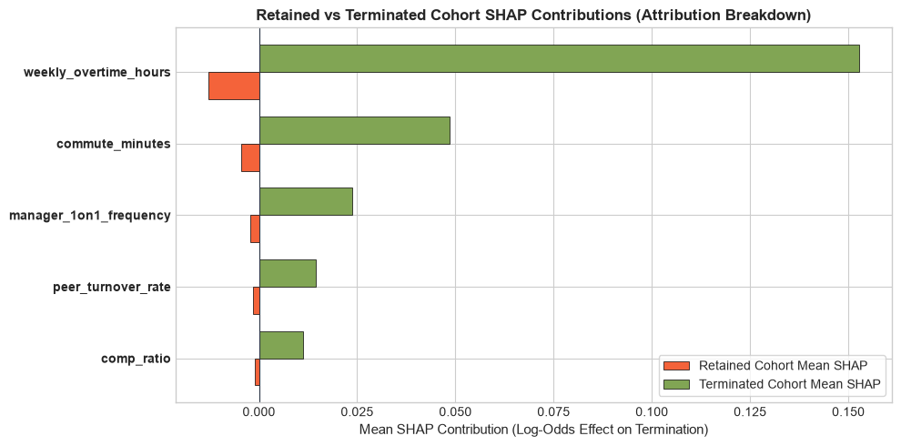
Feature 28: Time-in-Position (The Stagnation Index & Flight Risk Surge)
Business Context: An associate who has spent 36 months in an entry-level role whose median promotion time is 18 months experiences severe psychological stagnation. The Stagnation Index normalizes raw time-in-position against the empirical job family median, identifying associates at imminent risk of departure due to blocked mobility.
from people_analytics_toolkit.mobility import calculate_time_in_position, calculate_stagnation_index
# Compute stagnation index relative to job family benchmarks
stagnation_df = calculate_stagnation_index(
df=employee_roster_df, # Employee history DataFrame
current_date='2026-10-01', # Evaluation anchor date string (YYYY-MM-DD)
role_start_date_col='role_start', # Position inception date
job_family_col='job_family', # Cohort key for benchmark comparison
benchmark_median_months=36.0 # Baseline benchmark months (or dict mapping job families)
)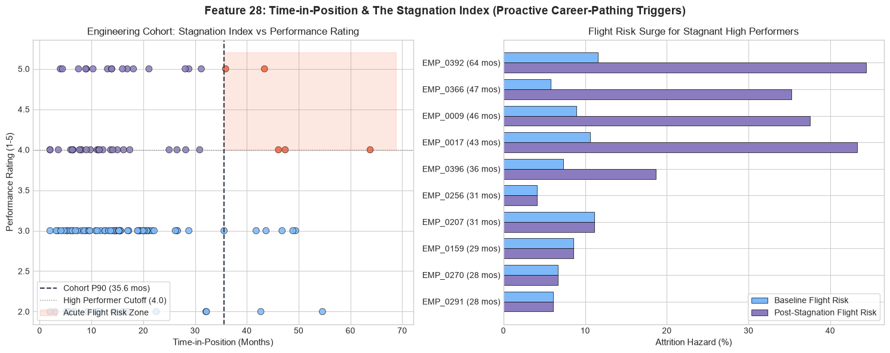
Pillar 7: Compensation and Pay Equity Transformations
Raw base salary is uninformative in enterprise modeling because pay scales differ drastically across grades and regions. An engineer earning $120k may be severely underpaid, while a technician earning $80k may exceed their band maximum. Pillar 7 standardizes compensation into scale-free operational indices: Compa-Ratio and Range Penetration.
Feature 29: Compa-Ratio (Midpoint and Market Parity)
Business Context: Compa-Ratio (Comparative Ratio) measures where an employee's compensation sits relative to the established midpoint of their salary grade. A ratio of 1.00 indicates exact parity with market target; ratios below 0.85 indicate severe retention risk, while ratios above 1.15 indicate compensation compression.
Mathematical Formulation:
$$\text{Compa-Ratio} = \frac{\text{Base Salary}}{\text{Salary Band Midpoint}}$$from people_analytics_toolkit.compensation import calculate_compa_ratio
# Calculate scale-free Compa-Ratio
compa_series = calculate_compa_ratio(
salary=comp_df['base_salary'], # Employee base salary Series or array
midpoint=comp_df['band_midpoint'] # Salary band midpoint Series or constant float
)Feature 30: Range Penetration (Band Progression & Red/Green Circled Status)
Business Context: While Compa-Ratio evaluates distance from the midpoint, Range Penetration evaluates progression through the entire pay band from minimum to maximum. Associates with Range Penetration > 1.0 are "Red-Circled" (overpaid relative to grade, ineligible for standard merit raises); associates < 0.0 are "Green-Circled" (underpaid, presenting legal and equity compliance risks).
Mathematical Formulation:
$$\text{Range Penetration} = \frac{\text{Base Salary} - \text{Band Minimum}}{\text{Band Maximum} - \text{Band Minimum}}$$from people_analytics_toolkit.compensation import (
calculate_range_penetration,
classify_pay_band_status,
is_red_circled,
is_green_circled
)
# Compute Range Penetration
range_pen_series = calculate_range_penetration(
salary=comp_df['base_salary'], # Employee salary Series
band_min=comp_df['band_min'], # Band lower threshold Series
band_max=comp_df['band_max'] # Band upper threshold Series
)
# Classify audit status: 'Green-Circled' (<0.0), 'Within-Band' [0.0, 1.0], 'Red-Circled' (>1.0)
audit_status = classify_pay_band_status(
range_penetration=range_pen_series
)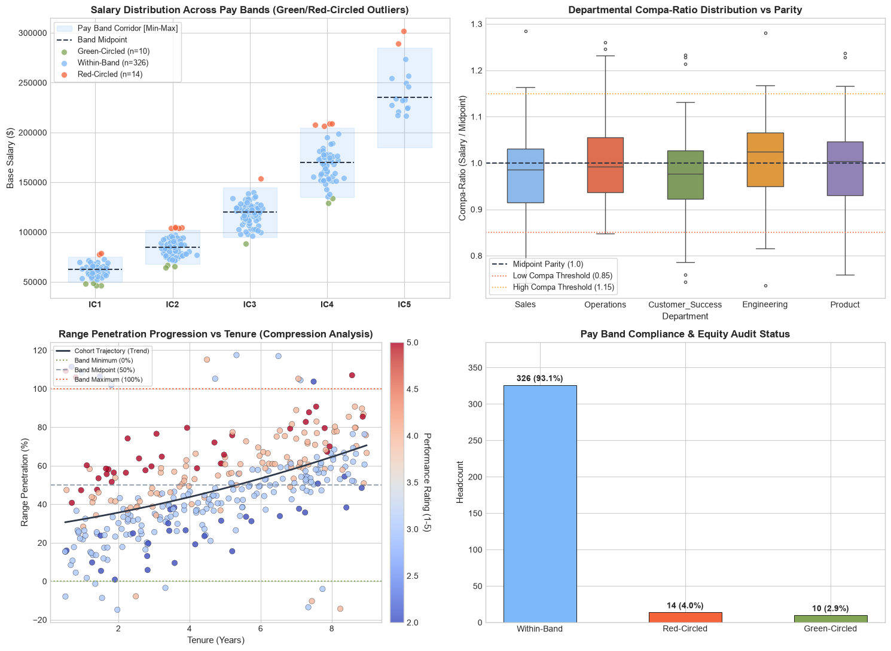
Pillar 8: Relational Dynamics, Structural Capital & ONA
Organizations operate as living collaboration graphs, not static tree hierarchies. An associate's formal job title rarely reflects their informal enterprise influence. When a critical cross-functional information broker departs, entire business units experience productivity shock. Pillar 8 computes rigorous Organizational Network Analysis (ONA) metrics, Ronald Burt's structural constraint, Euler magnitude, and span of control.
Feature 31: Betweenness Centrality (Cross-Functional Information Brokers)
Business Context: Information brokers sit on the shortest communication paths connecting disparate silos (e.g., bridging Engineering and Product). Betweenness centrality quantifies an associate's control over organizational information flow. Associates with high betweenness represent single points of organizational failure.
Mathematical Formulation:
$$C_B(v) = \sum_{s \neq v \neq t} \frac{\sigma_{st}(v)}{\sigma_{st}}$$from people_analytics_toolkit.ona import calculate_betweenness_centrality
# Quantify cross-silo information brokerage
betweenness_dict = calculate_betweenness_centrality(
G=enterprise_collaboration_graph, # NetworkX Graph or DiGraph of enterprise interactions
normalized=True, # True normalizes by 2 / ((n-1)(n-2)) for cross-network comparability
weight='weight' # Edge attribute holding tie strength / interaction frequency
)Feature 32: Eigenvector Centrality (Informal Enterprise Hubs)
Business Context: Degree centrality merely counts an associate's direct connections. Eigenvector centrality weights connections by the centrality of the neighbors: being connected to five vice presidents yields vastly greater enterprise influence than being connected to twenty isolated interns.
Mathematical Formulation:
$$\lambda x_v = \sum_{u \in N(v)} A_{vu} x_u$$from people_analytics_toolkit.ona import calculate_eigenvector_centrality
# Compute informal influence hub scores via power iteration
eigenvector_dict = calculate_eigenvector_centrality(
G=enterprise_collaboration_graph,
max_iter=1000, # Maximum power iteration convergence cycles (e.g., 500, 1000)
tol=1e-6, # Convergence tolerance threshold
weight='weight' # Edge interaction strength attribute
)Feature 33: Ronald Burt's Network Constraint Index (Structural Holes & Redundancy)
Business Context: Ronald Burt's sociological theory of "structural holes" posits that associates whose contacts are redundant (all connected to one another in a dense clique) have high constraint, limiting their access to novel information. Associates spanning structural holes have low constraint, enabling creative cross-pollination and rapid innovation.
Mathematical Formulation:
$$C_i = \sum_{j} c_{ij}, \quad c_{ij} = \left(p_{ij} + \sum_{q \neq i \neq j} p_{iq} p_{qj}\right)^2$$from people_analytics_toolkit.ona import calculate_burt_constraint
# Calculate Ronald Burt network constraint index
constraint_dict = calculate_burt_constraint(
G=enterprise_collaboration_graph,
nodes=None, # Subset of associate node IDs (None evaluates all nodes)
weight='weight' # Dyadic interaction strength weight attribute
)Feature 34: Euler Centrality & Leinster Metric Space Magnitude (Global Structural Capital)
Business Context: Local graph metrics miss global organizational diversity. Leinster metric space magnitude treats the enterprise graph as a metric space with similarity kernel \(Z_{uv} = \exp(-d(u,v))\). Solving the system \(Z \mathbf{w} = \mathbf{1}\) yields Euler weights \(\mathbf{w}\), quantifying each associate's non-redundant structural contribution to global organizational capital.
from people_analytics_toolkit.ona import calculate_euler_centrality, compute_complete_ona_profile
# Compute Leinster magnitude Euler weights
euler_scores = calculate_euler_centrality(
G=enterprise_collaboration_graph # NetworkX enterprise interaction graph
)
# Or compute complete unified ONA feature profile in one vectorized call
full_ona_df = compute_complete_ona_profile(G=enterprise_collaboration_graph)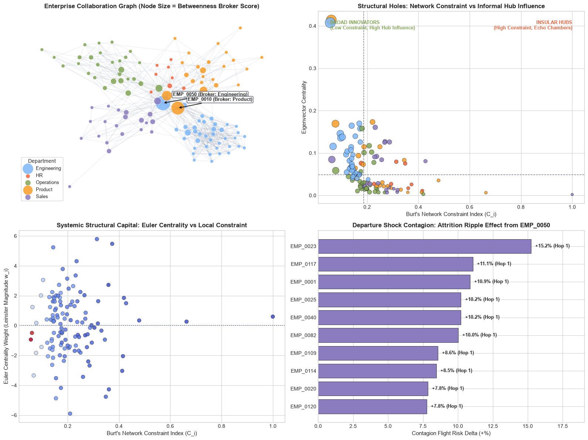
Feature 35: Span of Control (Managerial Load & Reorganization Flight Risk)
Business Context: Managerial span of control directly influences associate attrition. When restructuring leaves a manager with 22 direct reports instead of 7, 1-on-1 coaching evaporates, causing associate flight risk to surge. This module extracts hierarchical spans and evaluates reorganization shocks.
from people_analytics_toolkit.ona import calculate_span_of_control, evaluate_span_reorganization_shock
# Extract reporting hierarchy spans
spans_df = calculate_span_of_control(
df=hierarchy_roster_df, # Census DataFrame
employee_col='employee_id', # Associate identifier column
manager_col='manager_id' # Supervisor identifier column
)
# Evaluate associate flight risk surge caused by restructuring span shocks
reorg_shock_df = evaluate_span_reorganization_shock(
df_pre=pre_reorg_roster, # Pre-restructuring reporting hierarchy
df_post=post_reorg_roster, # Post-restructuring reporting hierarchy
employee_col='employee_id',
manager_col='manager_id',
base_flight_risk_col=None, # Optional column containing baseline flight risk
shock_sensitivity=0.15 # Multiplier per newly added direct report
)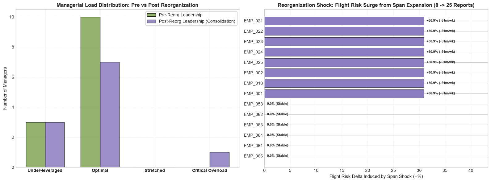
Pillar 9: Algorithmic Equity, Pay Decomposition & Individual Fairness
People Analytics algorithms directly influence human livelihoods: compensation, hiring selection, performance ratings, and promotions. Deploying unconstrained models can automate historical bias and violate federal employment guidelines (EEOC, Title VII, EU AI Act). Pillar 9 implements rigorous econometric decomposition and algorithmic fairness constraints.
Feature 36: Oaxaca-Blinder Pay Gap Decomposition (Explained vs Unexplained Returns)
Business Context: Simple raw pay gap comparisons fail because they ignore differences in legitimate human capital endowments (tenure, role grade, education, performance). The econometric Oaxaca-Blinder technique decomposes the raw pay disparity into an Explained Portion (attributable to legitimate qualifications) and an Unexplained Portion (attributable to differential market returns / systemic bias).
Mathematical Formulation:
$$\bar{Y}_A - \bar{Y}_B = (\bar{X}_A - \bar{X}_B)\hat{\beta}^* + \left[ \bar{X}_A(\hat{\beta}_A - \hat{\beta}^*) + \bar{X}_B(\hat{\beta}^* - \hat{\beta}_B) \right]$$from people_analytics_toolkit.equity import oaxaca_blinder_decomposition, OaxacaBlinderResult
# Perform econometric pay gap decomposition
ob_result = oaxaca_blinder_decomposition(
df=equity_audit_df, # Compensation audit census DataFrame
outcome_col='base_salary', # Remuneration outcome metric (e.g., 'base_salary', 'total_comp')
group_col='protected_class', # Binary sensitive group column (e.g., 'gender_code', 'ethnicity_code')
feature_cols=[ # Vector of legitimate human capital endowments
'tenure_years',
'job_level',
'performance_rating',
'education_years'
],
group_majority=1, # Label for majority / reference cohort (e.g., 1 or 'Male')
group_minority=0, # Label for comparison cohort (e.g., 0 or 'Female')
reference_type='pooled' # Reference model coefficients: 'majority', 'minority', 'pooled'
)
# Returns: ob_result.total_gap, ob_result.explained_gap, ob_result.unexplained_gap, ob_result.p_valuesFeature 37: Demographic Parity Difference & Ratio (Macro Selection Equality)
Business Context: In talent acquisition and promotion algorithms, Demographic Parity requires that the positive selection rate be equal across protected demographic groups, enforcing the EEOC Four-Fifths (80%) Rule.
Mathematical Formulation:
$$\Delta_{\text{DP}} = |P(\hat{Y}=1 \mid A=1) - P(\hat{Y}=1 \mid A=0)| \leq \epsilon$$from people_analytics_toolkit.equity import demographic_parity_difference, demographic_parity_ratio
# Evaluate selection parity differences across protected attributes
dp_diff = demographic_parity_difference(
y_pred=promotion_decisions, # Binary predicted promotion or interview decision (0 or 1)
sensitive_features=gender_series # Sensitive demographic attribute Series
) # Ideal = 0.0
dp_ratio = demographic_parity_ratio(
y_pred=promotion_decisions,
sensitive_features=gender_series
) # Four-fifths rule check: ratio must be >= 0.80Feature 38: Equalized Odds Constraint via Exponentiated Gradient Minimax Reduction
Business Context: Demographic Parity ignores true candidate performance, potentially penalizing qualified associates. Equalized Odds requires that True Positive Rates (TPR) and False Positive Rates (FPR) be equal across protected groups. The Exponentiated Gradient reduction solves a constrained minimax saddle-point game, optimizing predictive performance while bounding fairness violations.
Mathematical Formulation:
$$P(\hat{Y}=1 \mid A=1, Y=y) = P(\hat{Y}=1 \mid A=0, Y=y) \quad \forall y \in \{0, 1\}$$from people_analytics_toolkit.equity import equalized_odds_difference, ExponentiatedGradientFairness
from sklearn.linear_model import LogisticRegression
# Audit equalized odds disparity
eq_diff = equalized_odds_difference(
y_true=y_ground_truth, # Ground truth outcome
y_pred=y_predictions, # Model predictions
sensitive_features=gender_series # Protected category Series
)
# Train minimax fair model satisfying Equalized Odds constraints
fair_classifier = ExponentiatedGradientFairness(
estimator=LogisticRegression(), # Base scikit-learn classifier
constraints='EqualizedOdds', # Constraint: 'EqualizedOdds', 'DemographicParity', 'TruePositiveRateParity'
eps=0.02, # Allowable constraint slack epsilon (e.g., 0.01, 0.02, 0.05)
max_iter=50 # Minimax saddle-point optimization iterations
)
fair_classifier.fit(X=X_train, y=y_train, sensitive_features=gender_train)Feature 39: Individual Fairness & Local Predictive Consistency (Lipschitz Concordance)
Business Context: Group fairness metrics can be satisfied while still treating similar individuals unfairly (e.g., flipping decisions for two identical candidates). Dwork's Individual Fairness principle dictates: "Similar individuals must receive similar outcomes." This module calculates local Lipschitz neighborhood predictive concordance in job qualification space.
from people_analytics_toolkit.equity import compute_individual_fairness_consistency
# Evaluate local individual predictive consistency across qualification neighbors
local_cons, global_cons, audit_meta = compute_individual_fairness_consistency(
X=qualifications_feature_matrix, # Scaled continuous matrix of legitimate human capital attributes
y_pred=model_predicted_probs, # Model predicted probabilities or continuous scores
n_neighbors=5, # Nearest neighbors k in qualification space (e.g., 3, 5, 10)
distance_metric='euclidean' # Metric in skill space: 'euclidean', 'manhattan', 'cosine'
)
# Returns: local consistency per associate, global consistency scalar, neighbor distance metadata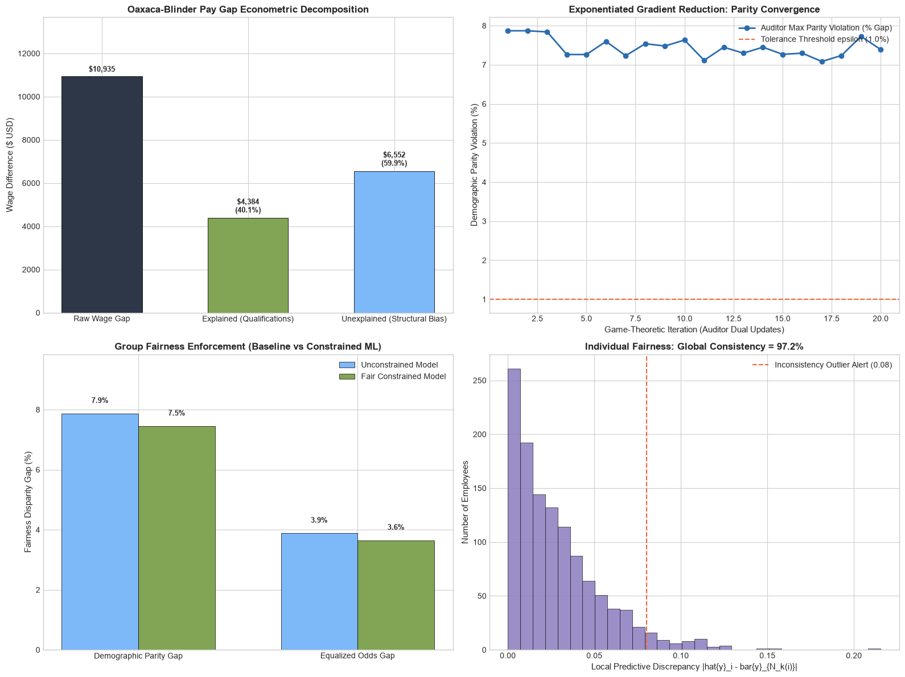
Pillar 10: Prescriptive Interventions: Causal Inference & Heterogeneous Uplift
Standard predictive models tell HR leaders who is likely to leave. They fail completely at answering what intervention will prevent them from leaving. Prescribing a retention bonus to an associate who would stay anyway wastes budget; prescribing it to a "sleeping dog" can trigger departure. Pillar 10 implements doubly robust causal inference, causal forests, uplift curves, and causal DAG discovery.
Feature 40: Augmented Inverse Propensity Weighting (AIPW Doubly Robust ATE)
Business Context: When evaluating voluntary workplace programs (such as mentorship or wellness stipends), associates self-select. High-performing associates enroll more frequently, creating massive confounding. AIPW combines a propensity model \(\hat{e}(X) = P(W=1 \mid X)\) with an outcome regression model \(\hat{\mu}(X, W)\). The estimator is "doubly robust": it remains completely unbiased if either the propensity model OR the outcome model is correctly specified.
Mathematical Formulation:
$$\hat{\tau}_{\text{AIPW}} = \frac{1}{N} \sum_{i=1}^{N} \left[ \hat{\mu}_1(X_i) - \hat{\mu}_0(X_i) + \frac{W_i(Y_i - \hat{\mu}_1(X_i))}{\hat{e}(X_i)} - \frac{(1 - W_i)(Y_i - \hat{\mu}_0(X_i))}{1 - \hat{e}(X_i)} \right]$$from people_analytics_toolkit.prescriptive import aipw_estimator, AIPWResult
# Estimate true causal Average Treatment Effect (ATE) with double robustness
aipw_res = aipw_estimator(
y=retention_outcomes, # Binary or continuous outcome Series/array
treatment=mentorship_enrolled, # Binary policy intervention indicator (1 = enrolled, 0 = control)
X=baseline_covariates_df, # Baseline pre-treatment confounders (tenure, performance, role, compensation)
propensity_model=None, # Estimator for P(W=1|X) (None defaults to LogisticRegressionCV)
outcome_model=None, # Estimator for E[Y|X,W] (None defaults to RidgeCV)
clip_range=(0.02, 0.98), # Trimming bounds to prevent extreme propensity score weights
n_splits=5, # K-fold cross-fitting splits to eliminate Donsker class bias
random_state=42 # Random seed for cross-fitting partition
)
# Returns: aipw_res.ate, aipw_res.se, aipw_res.p_value, aipw_res.ci_lower, aipw_res.ci_upperFeature 41: Synthetic Difference-in-Differences (SDiD Panel Policy Evaluation)
Business Context: When an enterprise rolls out a new workplace policy (e.g., a 4-day workweek or scheduling app) in a single market, standard Difference-in-Differences (DiD) fails if the parallel trends assumption is violated. Synthetic DiD combines unit weights (creating a synthetic control twin) with time weights (re-weighting pre-intervention periods), delivering robust policy evaluation on panel data.
from people_analytics_toolkit.prescriptive import synthetic_difference_in_differences
# Evaluate panel policy intervention effect
sdid_res = synthetic_difference_in_differences(
df=workforce_panel_df, # Longitudinal panel DataFrame across business units and time
unit_col='business_unit', # Unit / plant / market identifier column
time_col='quarter_epoch', # Time period index column
outcome_col='turnover_rate', # Continuous outcome metric (e.g., quarterly turnover rate)
treated_units=['Office_North'], # List of treated units receiving policy reform
post_period_start=7, # Starting epoch index of the post-intervention regime
l2_regularization=1e-4 # L2 penalty on synthetic unit and time weight simplex estimation
)
# Returns dict: 'att' (Average Treatment Effect on the Treated), 'omega_weights', 'lambda_weights', 'p_value'Feature 42: Causal Forest with Double Machine Learning (CausalForestDML & Honest Splitting)
Business Context: Treatment effects are heterogeneous: an intervention may decrease flight risk by -25% for high-tenure associates but increase flight risk by +10% for entry-level staff. Causal Forest with Double Machine Learning residualizes both treatment and outcome via cross-validated nuisance estimators, then builds an ensemble of honest causal trees to estimate individualized treatment effects (CATE).
Mathematical Formulation:
$$\tilde{Y} = Y - \hat{\mathbb{E}}[Y \mid X], \quad \tilde{W} = W - \hat{\mathbb{E}}[W \mid X], \quad \tau(x) = \arg\min_\tau \mathbb{E}\left[(\tilde{Y} - \tau(X)\tilde{W})^2\right]$$from people_analytics_toolkit.prescriptive import CausalForestDML
# Train honest Causal Forest DML to estimate personalized treatment effects
cf_dml = CausalForestDML(
n_estimators=50, # Number of honest causal trees in ensemble (e.g., 50, 100, 200)
max_depth=4, # Maximum tree depth for heterogeneous treatment effect splits
min_samples_leaf=10, # Minimum sample size in treatment and control leaves
subsample_ratio=0.7, # Subsampling ratio for double-sample bagging
propensity_model=None, # Nuisance model for treatment residualization
outcome_model=None, # Nuisance model for outcome residualization
random_state=42 # Seed for reproducible honest sample partitioning
)
cf_dml.fit(
Y=retention_1yr_series, # 1-year retention outcome vector
T=intervention_flag_series, # Binary intervention treatment vector
X=associate_covariates_df # Predictor matrix for Conditional Average Treatment Effect (CATE)
)
individual_cate = cf_dml.predict_cate(X=associate_covariates_df)Feature 43: Prescriptive Uplift Evaluation (Qini Curve, AUUC, and Doubly Robust MSE)
Business Context: ROC-AUC is useless for prescriptive targeting. An organization needs to prioritize the "Persuadables" (who only retain if treated) over "Sure Things" or "Lost Causes." The Qini curve sorts associates by predicted uplift and plots cumulative incremental gains over random targeting, quantifying the Area Under the Uplift Curve (AUUC).
from people_analytics_toolkit.prescriptive import qini_curve, area_under_uplift_curve, doubly_robust_uplift_eval
# Compute cumulative Qini targeting curve
qini_df = qini_curve(
y_true=retention_outcomes, # Ground truth outcome vector
treatment=treatment_received, # Binary treatment assignment
uplift_scores=individual_cate, # Predicted CATE uplift scores from Feature 42
n_bins=10 # Decile bins for cumulative uplift ranking (e.g., 10, 20)
)
auuc_metrics = area_under_uplift_curve(
y_true=retention_outcomes,
treatment=treatment_received,
uplift_scores=individual_cate,
n_bins=20
)
dr_eval = doubly_robust_uplift_eval(
y_true=retention_outcomes,
treatment=treatment_received,
uplift_scores=individual_cate,
X=baseline_covariates_df,
clip_range=(0.01, 0.99)
)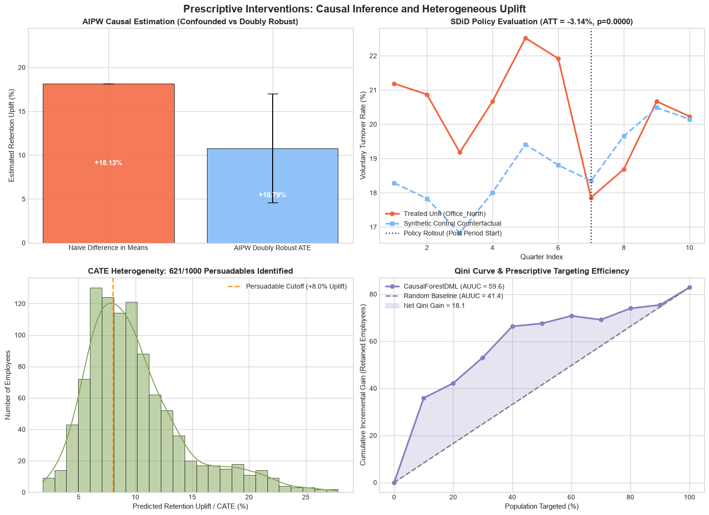
Feature 44: Synthetic Control Weights (Synth-DiD Synthetic Twin & Causal Lift)
Business Context: When testing a retention initiative in a single flagship location, finding an identical control store is impossible. Synthetic Control solves a convex optimization problem to find a weighted combination of donor control stores that perfectly mirrors the pre-treatment trajectory of the pilot unit.
from people_analytics_toolkit.prescriptive import build_synthetic_control_twin, compute_synthetic_control_weights
# Construct synthetic control twin for pilot retail store
synth_twin_df = build_synthetic_control_twin(
df=retail_scheduling_panel, # Panel DataFrame across stores and weeks
unit_col='store_id', # Unit identifier column
time_col='fiscal_week', # Longitudinal week identifier
outcome_col='associate_turnover',# Target outcome metric
pilot_unit='Store_01', # Target pilot location
post_period_start=16, # Inception week of flexible scheduling deployment
donor_pool=None, # Candidate control units (None uses all non-pilot stores)
intercept=True, # Fit level-shift intercept to bridge baseline gaps
l2_regularization=1e-4 # L2 ridge regularization penalty on donor weights
)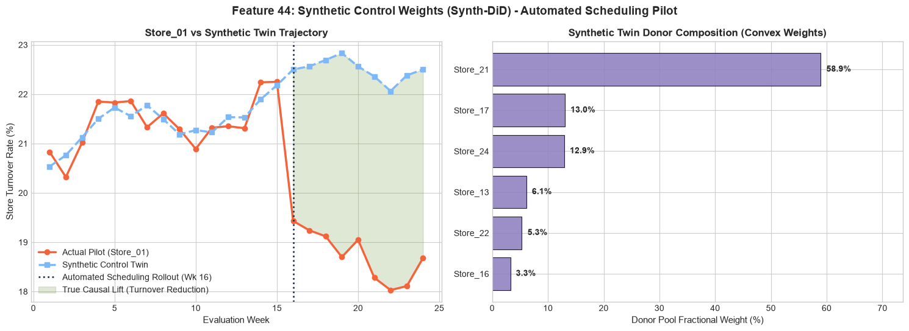
Feature 45: Directed Causal Edge Weights (DAG Discovery & Confounder Untangling)
Business Context: Observational correlations frequently confuse cause and effect. Does overtime cause turnover, or does impending turnover force remaining associates to log overtime? The NOTEARS (Non-combinatorial Optimization for Directed Acyclic Graphs) algorithm formulates DAG structure learning as a continuous optimization problem, eliminating circular feedback loops and discovering directed causal edges.
Mathematical Formulation:
$$\min_{W} \frac{1}{2n} \|X - XW\|_F^2 + \lambda_1 \|W\|_1 \quad \text{s.t.} \quad h(W) = \text{tr}\left(e^{W \circ W}\right) - d = 0$$from people_analytics_toolkit.prescriptive import (
compute_directed_causal_edge_weights,
diagnose_causal_confounding,
notears_linear
)
# Learn continuous causal DAG structure from observational data
dag_results = compute_directed_causal_edge_weights(
df=workforce_observational_df, # Observational DataFrame
variables=[ # Candidate causal graph nodes
'overtime_hours',
'manager_quality',
'commute_distance',
'flight_risk',
'turnover_event'
],
lambda1=0.03, # L1 sparsity penalty for graph edge pruning (e.g., 0.01, 0.03, 0.05)
threshold=0.15, # Edge weight truncation threshold (e.g., 0.10, 0.15, 0.25)
standardize=True # Standardize variables to zero mean and unit variance
)
# Diagnose whether correlation between two nodes is direct or confounded
confounding_diag = diagnose_causal_confounding(
weights_df=dag_results['directed_weights_df'],
cause_var='overtime_hours',
effect_var='turnover_event',
corr_matrix=dag_results['correlation_matrix']
)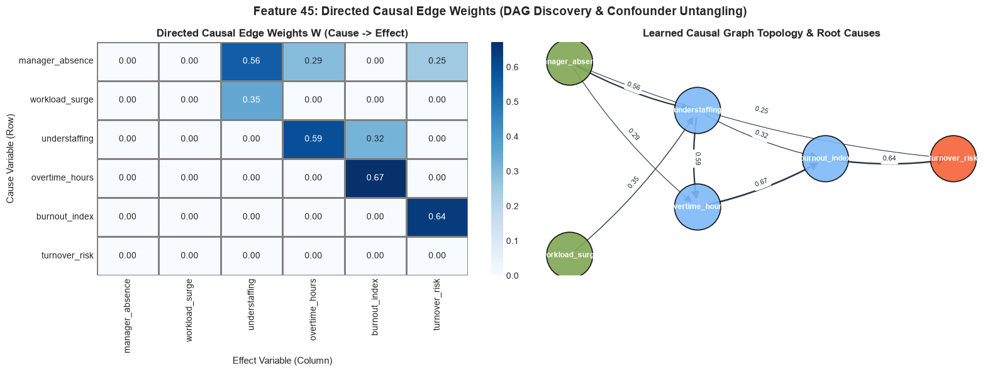
Pillar 11: Continuous-Time Trajectories & Heterogeneous Graph Representation Learning
Real-world career progressions occur in continuous time: employees do not transition solely on fiscal year boundaries. Furthermore, associates are embedded in heterogeneous knowledge networks connecting people, skills, and cross-functional projects. Pillar 11 leverages continuous-time Markov chains, meta-path random walks, Metapath2Vec graph embeddings, and multi-head trajectory self-attention.
Feature 46: Continuous-Time Markov Chain (CTMC) Career Trajectories & Matrix Exponential
Business Context: Discrete Markov chains assume fixed time steps (e.g., annual transitions). Real career moves happen asynchronously. A Continuous-Time Markov Chain models transitions via an infinitesimal transition rate matrix \(\mathbf{Q}\). The continuous transition probability matrix for any arbitrary time horizon \(t\) is solved via the matrix exponential.
Mathematical Formulation:
$$\mathbf{P}(t) = \exp(\mathbf{Q} t) = \sum_{k=0}^{\infty} \frac{(\mathbf{Q} t)^k}{k!}, \quad \mathbb{E}[\text{Sojourn}_i] = -\frac{1}{q_{ii}}$$from people_analytics_toolkit.trajectories import ContinuousTimeMarkovChain
# Initialize CTMC with career grade states
ctmc = ContinuousTimeMarkovChain(
state_labels=['Associate', 'Senior', 'Staff', 'Director', 'Terminated']
)
# Fit transition intensity rate matrix Q from continuous event log
ctmc.fit_from_event_log(
event_log=career_moves_df, # Event log DataFrame
employee_col='employee_id', # Associate identifier
state_col='role', # Career stage / job rank column
duration_col='duration_years', # Continuous tenure in state
censored_col='is_active' # Censoring indicator (1 if ongoing, 0 if transitioned)
)
# Compute transition probability matrix P(t) for arbitrary forward horizons (e.g., 2.5 years)
P_matrix_2yr = ctmc.transition_probability_matrix(t=2.5)
# Calculate expected sojourn / holding times in each career grade before transition
sojourn_times = ctmc.expected_sojourn_times()Feature 47: Meta-Path Biased Random Walks on Heterogeneous HCM Multigraphs
Business Context: An enterprise graph contains multiple entity types: Employees, Skills, and Projects. Unconstrained random walks produce meaningless traversals. Meta-path biased random walks force paths to follow specific organizational semantic templates (such as Employee → Project → Employee for collaboration affinity, or Employee → Skill → Employee for skill complementarity).
from people_analytics_toolkit.trajectories import generate_metapath_walks
# Generate semantic meta-path random walks over heterogeneous multigraph
sampled_walks = generate_metapath_walks(
G=heterogeneous_hcm_multigraph, # NetworkX Graph connecting employees, skills, and projects
meta_paths=[ # List of semantic node traversal templates
['employee', 'project', 'employee'],
['employee', 'skill', 'employee'],
['employee', 'project', 'skill', 'project', 'employee']
],
walk_length=20, # Steps along each random walk (e.g., 10, 20, 40)
num_walks=10, # Walk iterations initiated per node (e.g., 5, 10, 20)
random_state=42 # Seed for reproducible stochastic sampling
)Feature 48: Metapath2Vec Graph Representation Learning & Complementarity
Business Context: Traditional team staffing matches associates by keyword search. Metapath2Vec applies heterogeneous Skip-gram embedding with negative sampling to the meta-path walk corpus generated in Feature 47. The resulting latent embeddings capture deep organizational complementarity, enabling algorithmic team formation and cross-functional staffing.
from people_analytics_toolkit.trajectories import Metapath2Vec
# Train heterogeneous graph embedding model
mp2v = Metapath2Vec(
embedding_dim=32, # Latent vector dimension (e.g., 16, 32, 64)
walk_length=20, # Length of sampled walks
num_walks=10, # Number of walks per node
window_size=5, # Skip-gram context window size
negative_rate=5.0, # Negative sampling ratio
random_state=42 # Random seed
)
# Learn dense latent embeddings from meta-path walk corpus
node_embeddings = mp2v.fit_transform(
walks=sampled_walks # Tokenized trajectory corpus from Feature 47
)Feature 49: Dynamic Entity & Trajectory Self-Attention Aggregator
Business Context: An associate's career history is an ordered sequence of roles, project milestones, and performance ratings. Traditional mean pooling treats all past milestones equally. A multi-head self-attention aggregator dynamically attends to the most formative career transitions, generating an adaptive employee representation for talent mobility models.
Mathematical Formulation:
$$\text{Attention}(Q, K, V) = \text{softmax}\left(\frac{QK^T}{\sqrt{d_k}}\right)V$$from people_analytics_toolkit.trajectories import DynamicEntitySelfAttention
# Initialize multi-head self-attention trajectory aggregator
attention_aggregator = DynamicEntitySelfAttention(
n_heads=2, # Number of attention heads (e.g., 2, 4, 8)
d_model=32, # Embedding dimensionality (must be divisible by n_heads)
random_state=42 # Weight initialization seed
)
# Aggregate sequential career stage embeddings into a unified associate vector
agg_vector, attn_weights = attention_aggregator.aggregate(
embeddings_sequence=career_state_embeddings # 3D or 2D array of historical sequence vectors
)
# Returns: aggregated candidate representation vector and attention weight matrix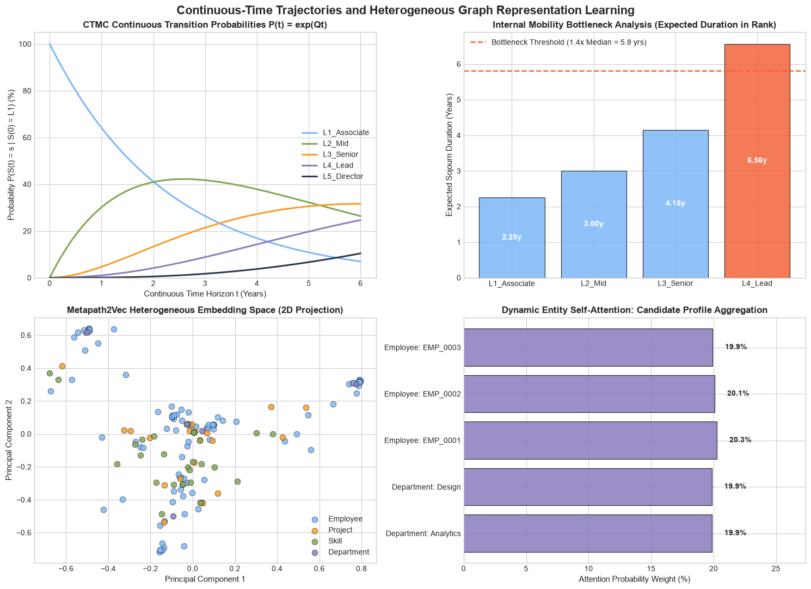
Conclusion & Production Deployment Recommendations
Transforming raw Human Capital Management telemetry into reliable, equitable, and causal signals requires dedicated mathematical architectures. By replacing ad-hoc scripts with people-analytics-toolkit, enterprise analytics teams achieve:
- Leakage-Free Hierarchical Modeling: Empirical Bayes target shrinkage and grouped LOO z-scores eliminate target leakage in nested store and department hierarchies.
- Continuous Memory Preservation: Fractional differencing and tier-weighted exponential decay model real-world employee event decay without destroying long-term organizational memory.
- Operational Chaos & Volatility Tracking: Rolling Shannon entropy, GARCH(1,1), and Hawkes self-exciting processes provide early warning indicators for scheduling turbulence and absence contagion.
- Econometric & Algorithmic Equity: Oaxaca-Blinder decomposition, equalized odds minimax reduction, and individual Lipschitz concordance provide end-to-end fairness compliance.
- Prescriptive Causal Decision Support: AIPW doubly robust estimators, Synthetic DiD, and Causal Forest DML decouple correlational noise from actionable intervention policy.
For questions, issue tracking, or contributions to the open-source package ahead of the upcoming PyPI release, visit the GitHub repository at github.com/sam-tritto/advanced-people-analytics-features.